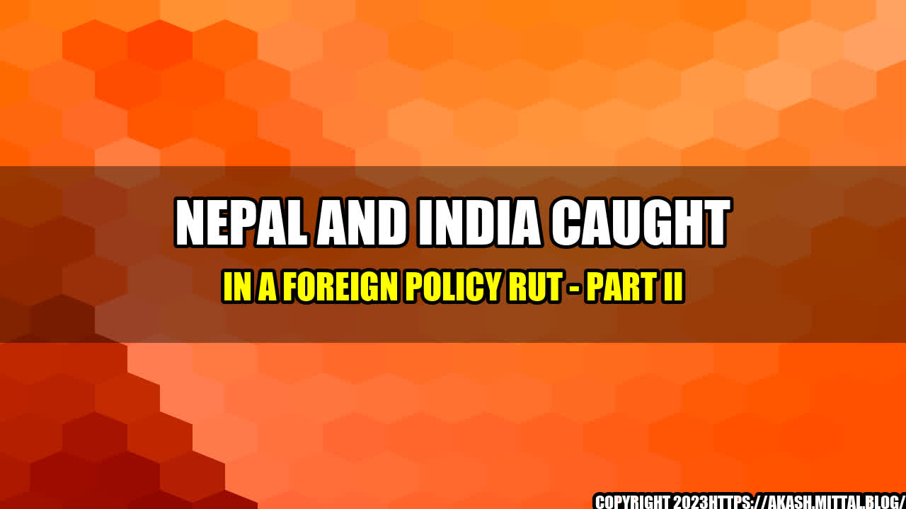

Nepal and India Caught in a Foreign Policy Rut - Part II

As the sun sets over the Himalayan ranges, the two neighbouring nations, India and Nepal, are still caught in a complex web of foreign policy tangles. History bears testimony to the fact that the age-old symbiotic relationship between the two nations was fostered on cultural, religious and linguistic ties and a mutual sense of camaraderie. Nevertheless, over the years, this equilibrium has become increasingly unstable, marked by economic and political frictions.
The cold reception that Indian Prime Minister Narendra Modi's visit to Nepal in May 2018 received was not a proud moment of the thriving democracy and open-mindedness that Nepal is widely known for. It was a wake-up call for both the nations to ponder over their current relationship and to figure out ways to set things straight.
It's no secret that India has flexed its muscles in the region at the cost of its smaller neighbours. Similarly, Nepal has always upheld an anti-India sentiment due to India's intervention in Nepali political affairs. Consequently, the question arises, what can be done to take the first step towards resolving this deadlock?
Quintessential Examples
Three significant examples that best describe the current foreign policy rut between Nepal and India are:
- Border Issues: India's lack of formalisation of the open border policy has created an ideological divide among the Indian and Nepalese population, thus leading to increased tensions at the border. The border disputes reach their peak when Nepal claims the disputed Kalapani area as its own, which India opposes. The political disagreement on borders cost Nepal its aid from India.
- Blockade: The blockade of 2015 is still a raw wound for Nepali citizens with memories of people dying of severe shortage of fuel and medicine. This was due to the restriction in border movement by India and then by the Madhesis in Nepal, demands of whom remained unaddressed by the government. The blockade caused Nepal's economy to contract, straining its ties with India.
- Water Sharing: Amidst political tensions, the issue of water sharing between Nepal and India has become highly contentious. The ongoing Pancheshwar Multipurpose Project is a case in point, where India has raised concerns about security, environment and funding, and has proposed re-engineering the site leading to a delay in the project.
The Way Ahead
The first step in any diplomatic discourse is to recognise and respect the other country's sovereignty. To de-escalate the current situation, both nations can adopt the following measures:
- Dialogue: On both fronts, talks are imperative. The bilateral meets of the foreign secretaries, home secretaries and Prime Ministers must be held regularly to take stock of the current situation and pave the way for peaceful resolution of issues concerning both the countries.
- Energy Cooperation: As India's economy grows, its need for energy security is expected to rise. Nepal can play a pivotal role in fulfilling India's energy demands, being potentially a rich hydroelectricity source. Both nations can agree to collaborate on development projects in the field of hydroelectricity and revive agreements they've signed in the past, such as exporting surplus power from Nepal to India.
- People to people initiatives: Building better people to people relationships through cultural and educational exchanges can reduce misunderstanding and resentment among the general population of both countries. In the past, programmes such as the Nepal Bharat Maitri Friendship Society and India's Mahatma Gandhi Scholarship have been effective in building goodwill between the two nations.
Conclusion
The relationship between India and Nepal has always been one of a kind. It's a bond that is attached to the string of shared culture and history; nevertheless, New Delhi's habit of pushing political agendas into Kathmandu's internal affairs, promises of aid being pushed upon the development projects and Nepal's vision for becoming a republic state, have all cumulated to create a sense of grudge in the Nepali population. Revamping the current mechanism and reinforcing diplomatic ties is the only way forward. Strengthening the foundation of their relationship will also have a ripple effect on the stability of the region at large.
References and Hashtags
SEO Keywords: Nepali, India, Foreign Policy, Neutral
Category: International Affairs
Hashtags:
- #ForeignPolicyRut
- #IndiaNepalRelations
- #IndoNepaliTies
- #NepaliSovereignty
- #RegionalStability
Reference URLs:
- https://www.hindustantimes.com/opinion/modi-s-nepal-visit-was-an-opportunity-missed/story-Lcsw7qSMMcYM4MmMEPHfVL.html
- https://theprint.in/opinion/india-is-trapping-nepal-into-a-debt-trap-its-time-it-changed-its-ways/65205/
- https://www.thequint.com/news/world/india-nepal-relations
- https://www.indiannavy.nic.in/content/maritime-study-nepal
Curated by Team Akash.Mittal.Blog
Share on Twitter Share on LinkedIn